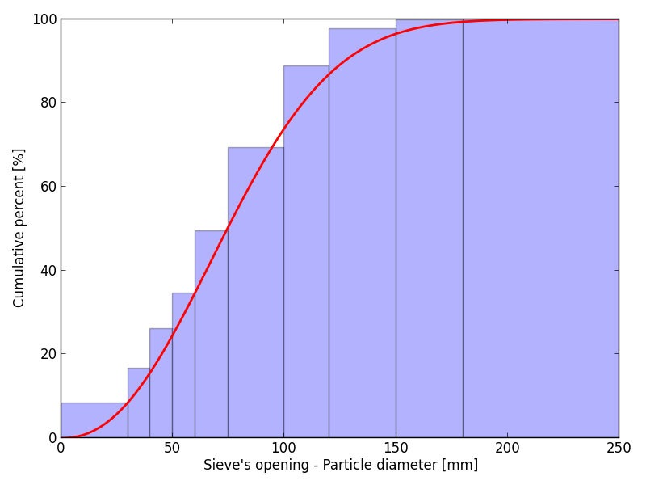
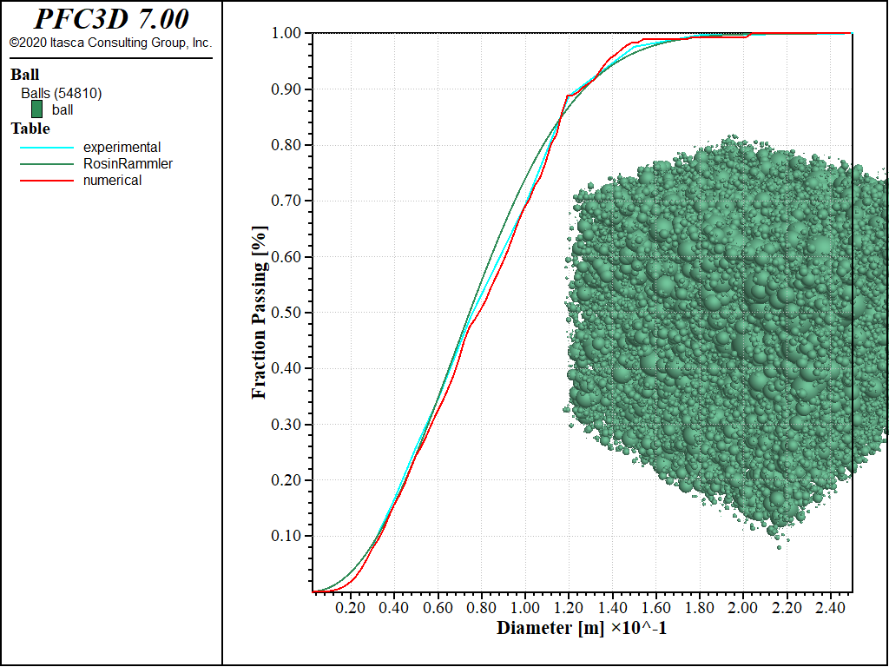

复现颗粒粒径分布
引言
注意
本算例的项目文件可在 PFC 中查看或运行。[1]所用的数据文件（data files）列于本算例末尾。
本算例从颗粒粒径分布（PSD）曲线出发创建颗粒集合体。文中给出了从筛分分析数据到球颗粒集合体的完整流程。
数值模型
筛分分析是一种常用技术，用于测量颗粒材料的粒径级配。该试验通常是将集料放入孔径逐级减小的套筛中振筛。下表给出对石灰岩破碎试样进行筛分分析的结果，其中显示了各粒级范围内材料的质量百分比。
| 粒级 [mm] | 质量百分比 [-] |
|---|---|
| 0 - 30 | 8.3 |
| 30 - 40 | 8.3 |
| 40 - 50 | 9.4 |
| 50 - 60 | 8.5 |
| 60 - 75 | 14.8 |
| 75 - 100 | 20.0 |
| 100 - 120 | 19.5 |
| 120 - 150 | 8.8 |
| 150 - 180 | 2.1 |
| 180 - 250 | 0.3 |
可使用 Rosin-Rammler 曲线（见式 (1)）描述与 表 1（Table 1） 数据相对应的累积 PSD 曲线：
其中 \(D_{pRR}\) 和 \(n_{RR}\) 是决定曲线位置与形状的两个参数。本算例取 \(D_{pRR}\)=0.0876、\(n_{RR}\)=2.25。


图 1：滞留颗粒的质量百分比（蓝色柱）以及累积质量百分比（Rosin-Rammler 曲线；红色虚线）。
文件 granulometry.dat (3D) 中包含的代码行如下所示。已设置随机种子，因此结果完全可复现。包含筛分分析数据的表格（即 表 1（Table 1） 中的数据）是通过 FISH 创建的。
fish def granulometry
global exptab = table.create('experimental')
table(exptab,0.03) = 0.083
table(exptab,0.04) = 0.166
table(exptab,0.05) = 0.26
table(exptab,0.06) = 0.345
table(exptab,0.075) = 0.493
table(exptab,0.1) = 0.693
table(exptab,0.12) = 0.888
table(exptab,0.15) = 0.976
table(exptab,0.18) = 0.997
table(exptab,0.25) = 1.0
end
[granulometry]
此外还创建了第二个表格，其中包含用于绘制 Rosin-Rammler 曲线以便与 PFC 模型进行比较的数值。此步骤仅用于对比，并非必需。
fish def RosinRammler(Dp_rr,n_rr,dmin)
global t = "RosinRammler"
loop local i (1,1000)
freq = math.random.uniform
temp = Dp_rr*((-math.ln(1-freq))^(1/n_rr))
table(t,temp)=freq
endloop
end
[RosinRammler(0.0876,2.25,0.002)]
在生成球颗粒之前必须先创建 域（domain）。使用 ball distribute 命令并结合 表 1（Table 1） 中的数据来创建试样。球颗粒被放置在盒子内，以满足目标孔隙率和粒径分布，而不考虑颗粒之间的重叠。基于半径范围和体积分数定义了 10 个分箱。请注意使用 设置随机数种子命令（model random） 命令设置伪随机数发生器的种子，从而确保模型的可复现性。也可以省略此命令，或将种子改为另一个整数，从而生成不同的构型。
[global domain_extent = 1.0]
model domain extent [-domain_extent] [domain_extent]
[global dmin = 0.001]
model random 10001
ball distribute box ([-domain_extent*0.7],[domain_extent*0.7]) ...
porosity 0.36 ...
number-bins 10 ...
bin 1 ...
radius [0.5*dmin] [0.5*table.x(exptab,1)] ...
volume-fraction [table.y(exptab,1)] ...
bin 2 ...
radius [0.5*table.x(exptab,1)] [0.5*table.x(exptab,2)] ...
volume-fraction [table.y(exptab,2)-table.y(exptab,1)] ...
bin 3 ...
radius [0.5*table.x(exptab,2)] [0.5*table.x(exptab,3)] ...
volume-fraction [table.y(exptab,3)-table.y(exptab,2)] ...
bin 4 ...
radius [0.5*table.x(exptab,3)] [0.5*table.x(exptab,4)] ...
volume-fraction [table.y(exptab,4)-table.y(exptab,3)] ...
bin 5 ...
radius [0.5*table.x(exptab,4)] [0.5*table.x(exptab,5)] ...
volume-fraction [table.y(exptab,5)-table.y(exptab,4)] ...
bin 6 ...
radius [0.5*table.x(exptab,5)] [0.5*table.x(exptab,6)] ...
volume-fraction [table.y(exptab,6)-table.y(exptab,5)] ...
bin 7 ...
radius [0.5*table.x(exptab,6)] [0.5*table.x(exptab,7)] ...
volume-fraction [table.y(exptab,7)-table.y(exptab,6)] ...
bin 8 ...
radius [0.5*table.x(exptab,7)] [0.5*table.x(exptab,8)] ...
volume-fraction [table.y(exptab,8)-table.y(exptab,7)] ...
bin 9 ...
radius [0.5*table.x(exptab,8)] [0.5*table.x(exptab,9)] ...
volume-fraction [table.y(exptab,9)-table.y(exptab,8)] ...
bin 10 ...
radius [0.5*table.x(exptab,9)] [0.5*table.x(exptab,10)] ...
volume-fraction [table.y(exptab,10)-table.y(exptab,9)]
为验证结果的准确性，可使用 创建测量区域（measure create） 命令创建测量球，并通过 bin 关键字指定粒径分布计算的分箱数。落在测量区域内的所有球颗粒都按其直径进行分箱。计算球颗粒的累积体积百分比（介于 0 和 1 之间）随分箱尺寸的变化关系，并通过 输出累积粒径分布数据（measure dump） 命令导出到表格中。
measure create id 1 radius [domain_extent*0.6] ...
bins 100 [dmin] [table.x(exptab,10)]
measure dump id 1 table 'numerical'
名为 numerical 的表格被用作绘制已生成试样粒径分布的基础。可以与 Rosin-Rammler 曲线进行直接比较（图 （Figure）Figure #tut-gran-comparison）。该对比表明，ball distribute 命令能够复现筛分分析的结果。请注意，Rosin-Rammler 曲线是人为地基于筛分分析的原始数据构建的。如果在 ball distribute 命令中采用更多的分箱数，数值结果将更接近该曲线。


图 2：输入的 PSD 曲线（Rosin-Rammler，绿色）、由 表 1（Table 1） 得到的试验曲线（蓝色）以及由 PFC 中的测量逻辑得到的 PSD 曲线（红色）之间的对比。
讨论
本教程给出了生成由相互重叠的球颗粒组成的模型所需的步骤，其中球颗粒遵循由筛分分析得到的真实粒径分布。球颗粒在盒子中生成，使球颗粒体积的累积总和为盒子体积的指定比例。使用 clump distribute 命令时，对刚性团簇也可遵循完全相同的步骤。但应当注意，平衡后试样的最终孔隙率不会与指定的孔隙率完全相同。这是因为在平衡后的系统中球颗粒会发生重叠。如果球颗粒的重叠量很小，则该差异可以忽略。
数据文件
granulometry.dat (3D)
; 文件名：Granulometry.dat (3D)
;
; 根据石灰岩试样的粒径分布创建
; 球体集合
;=========================================================================
model new
;输入石灰岩粒径级配的原始数据
; excerpt-avkm-start
fish def granulometry
global exptab = table.create('experimental')
table(exptab,0.03) = 0.083
table(exptab,0.04) = 0.166
table(exptab,0.05) = 0.26
table(exptab,0.06) = 0.345
table(exptab,0.075) = 0.493
table(exptab,0.1) = 0.693
table(exptab,0.12) = 0.888
table(exptab,0.15) = 0.976
table(exptab,0.18) = 0.997
table(exptab,0.25) = 1.0
end
[granulometry]
; excerpt-avkm-end
; excerpt-qgct-start
fish def RosinRammler(Dp_rr,n_rr,dmin)
global t = "RosinRammler"
loop local i (1,1000)
freq = math.random.uniform
temp = Dp_rr*((-math.ln(1-freq))^(1/n_rr))
table(t,temp)=freq
endloop
end
[RosinRammler(0.0876,2.25,0.002)]
; excerpt-qgct-end
; 生成试样
; excerpt-qydp-start
[global domain_extent = 1.0]
model domain extent [-domain_extent] [domain_extent]
[global dmin = 0.001]
model random 10001
ball distribute box ([-domain_extent*0.7],[domain_extent*0.7]) ...
porosity 0.36 ...
number-bins 10 ...
bin 1 ...
radius [0.5*dmin] [0.5*table.x(exptab,1)] ...
volume-fraction [table.y(exptab,1)] ...
bin 2 ...
radius [0.5*table.x(exptab,1)] [0.5*table.x(exptab,2)] ...
volume-fraction [table.y(exptab,2)-table.y(exptab,1)] ...
bin 3 ...
radius [0.5*table.x(exptab,2)] [0.5*table.x(exptab,3)] ...
volume-fraction [table.y(exptab,3)-table.y(exptab,2)] ...
bin 4 ...
radius [0.5*table.x(exptab,3)] [0.5*table.x(exptab,4)] ...
volume-fraction [table.y(exptab,4)-table.y(exptab,3)] ...
bin 5 ...
radius [0.5*table.x(exptab,4)] [0.5*table.x(exptab,5)] ...
volume-fraction [table.y(exptab,5)-table.y(exptab,4)] ...
bin 6 ...
radius [0.5*table.x(exptab,5)] [0.5*table.x(exptab,6)] ...
volume-fraction [table.y(exptab,6)-table.y(exptab,5)] ...
bin 7 ...
radius [0.5*table.x(exptab,6)] [0.5*table.x(exptab,7)] ...
volume-fraction [table.y(exptab,7)-table.y(exptab,6)] ...
bin 8 ...
radius [0.5*table.x(exptab,7)] [0.5*table.x(exptab,8)] ...
volume-fraction [table.y(exptab,8)-table.y(exptab,7)] ...
bin 9 ...
radius [0.5*table.x(exptab,8)] [0.5*table.x(exptab,9)] ...
volume-fraction [table.y(exptab,9)-table.y(exptab,8)] ...
bin 10 ...
radius [0.5*table.x(exptab,9)] [0.5*table.x(exptab,10)] ...
volume-fraction [table.y(exptab,10)-table.y(exptab,9)]
; excerpt-qydp-end
; excerpt-lrre-start
measure create id 1 radius [domain_extent*0.6] ...
bins 100 [dmin] [table.x(exptab,10)]
measure dump id 1 table 'numerical'
; excerpt-lrre-end
program return
;=========================================================================
; 文件结束：Granulometry.dat (3D)
尾注
| [1] | 要在 PFC 中查看本项目，请使用程序菜单。
⮡ PFC |
| 这些内容对您有帮助吗？… | FLAC3D © 2019, Itasca | 原文更新于 2020 年 10 月 8 日 |